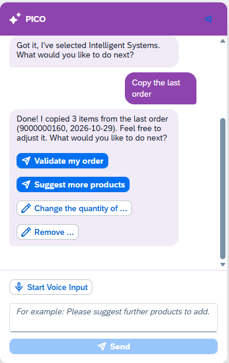

Pain points we remove
⏱
Slow, click-heavy order entrySearching customers and products screen by screen.
🔁
Repetitive reordersThe same baskets typed in again and again.
⚠️
Costly entry errorsWrong product, odd quantity, forgotten items.
🚗
No hands free in the fieldReps on the move or at the customer site.
Benefits you get
🚀
Hyper-productive repsOrders in seconds instead of minutes.
🎯
Higher order qualityPlausibility checks against order history.
💡
Upsell on autopilotSmart suggestions based on buying patterns.
🤝
Trust by designPrices and IDs come from your data, never from the AI.
Work your way
⌨️ManualClassic order entry with live prices
💬TypeDescribe it in plain language
🎤SpeakDictate in English or German
🔊ListenPICO reads its answers aloud
What PICO can do
👤 Select customerFinds the right account by name or number, asks if unsure.
⚡ Auto-draft from historyBuilds the usual order; uncertain items become suggestions.
➕ Add, change, remove items“Make it 10 instead”, “remove Product B”.
💡 Recommend productsProposes items the customer is likely to need.
✅ Validate orderFlags unusual products or quantities before you submit.
📋 Copy last orderStarts from the most recent order and adjusts.
🧭 Always the logical next stepAfter every action PICO offers one-click follow-ups (validate, suggest more, change quantity, remove) so you never wonder what to do next.
